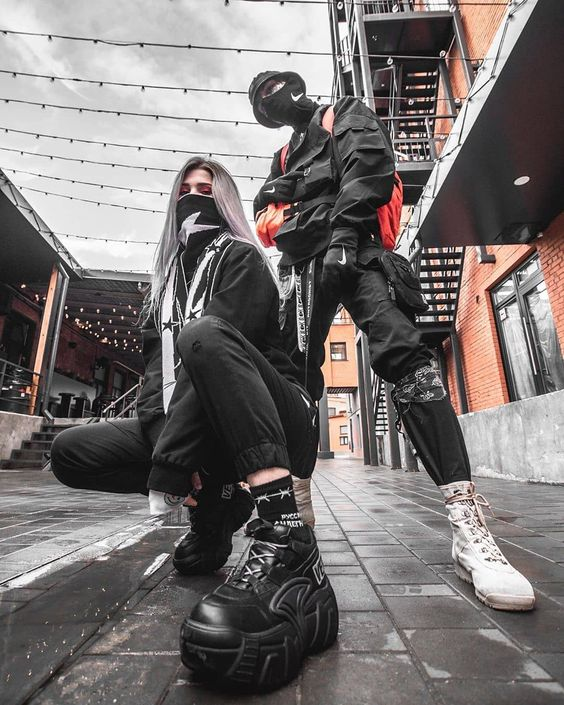
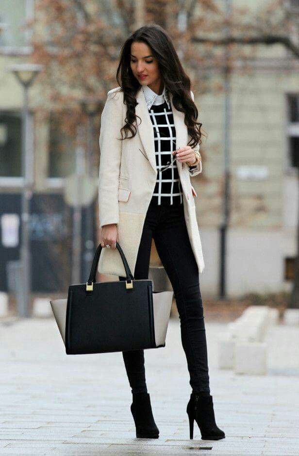
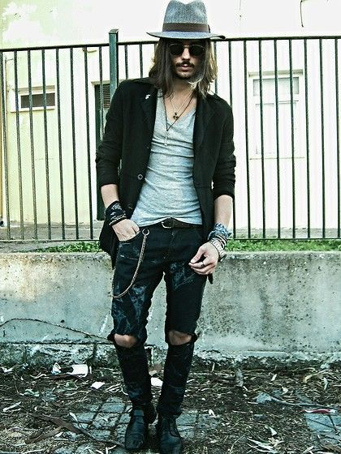
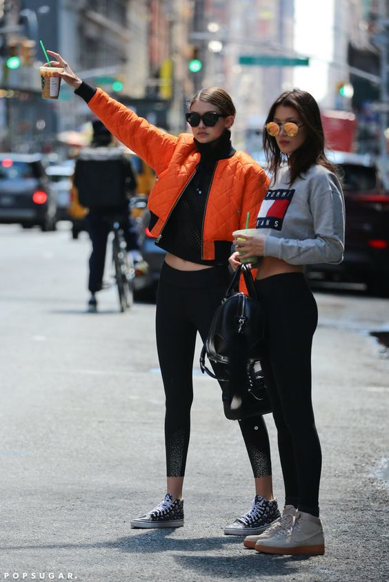

techwear
El 'teachwear' es una moda que se caracteriza por combinar la comodidad, la tecnología en textiles y el diseño futurista para crear prendas funcionales para la vida diaria pero con un toque dramático y apocalíptico. La ropa esta hecha de textiles ligeros pero resistentes que le brindan protección al cuerpo, es a prueba de agua y con cierta durabilidad. Los arneses, bolsillos, broches y cierres son el detalle final.
soft girl
La soft girl es una chica sensible, dulce y hasta cierto punto infantil. Por lo regular, esta tendencia es adoptada por veinteañeras.
Según los expertos en moda, si quieres ser una verdadera soft girl es importantísimo que ames el iluminador. Acuérdate cómo dice la canción ‘estoy brillando con highlighter’. Su estilo es muy soñador, mezcla cosas de infancia como overoles y coletas con maquillaje y otros estilos más adultos. Además, están acostumbradas a combinar sus atuendos con tenis, de preferencia, de colores claros.
clasico casual
La presencia de ropa elegante y de alta calidad es lo que más caracteriza al estilo clásico. Los pantalones rectos también son muy recurrentes, al igual que la creación de siluetas equilibradas a través de la combinación de prendas.
El estilo clásico transmite romanticismo y sofisticación mediante unos conjuntos donde prevalecen los colores neutros como el negro, el blanco, el gris o el beige. Los looks clásicos proyectan una gran madurez y seguridad, por eso, muchas personas no le dan una oportunidad a este estilo al considerarlo un tanto aburrido. Pero nada más lejos de la realidad. El estilo clásico no es sinónimo de antiguo, todo lo contrario, y en este artículo te lo vamos a demostrar.
academia o preppy

El estilo preppy es característico por sus siluetas estructuradas, colores pastel, prendas básicas, estampados de cuadros y bordados. La palabra preppy proviene de las universidades más influyentes de la costa este Estadounidense. La mayoría de los jóvenes de clase alta americana, antes de ingresar en las prestigiosas universidades del Ivy League, acudían a unos cursos previos llamados: preparatory courses.
Estos jóvenes fueron los creadores de este estilo, queriendo alejarse del estilo clásico de sus padres y dándole a giro a sus uniformes de colegio. Un estilo que dio un giro atrevido y divertido que a día de hoy ¡nos sigue encantando!
rock
La moda se ve influida siempre por la vida, el arte y la música. El rock ha traspasado el nivel de fenómeno musical para convertirse en actitud y fenómeno estilístico. El estilo rockero rompe por completo con la estética clásica y combina prendas atrevidas y urbanas como pantalones pitillo, prendas de cuero, tachuelas, lentejuelas, botas militares, sombreros trendy, gafas de aviador, etc. Firmas como Balmain, abanderan esta tendencia.
Sporty chic
El sporty chic, tiene como significado en español “deportivo” y “elegante”, es una tendencia que combina las prendas deportivas con un toque de glamour. Con esta moda no tienes que dejar a un lado la comodidad para lucir elegante y con lo más cool del momento. Es el estilo más utilizado por las mujeres hoy en día, incluso por los hombres, es conocido popularmente como “arreglado pero informal”. Los Sporty Outfits son la mezcla perfecta entre las prendas formales y las informales. Ahí está la clave, en el equilibrio entre ambas. Esta moda consiste en incorporar elementos o accesorios deportivos a un look habitual, priorizar la comodidad mientras luces espectacular. Desde añadir unos tenis a un vestido hasta un pantalón de chándal con unos tacones.